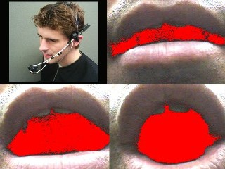
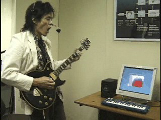
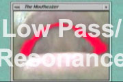
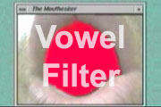
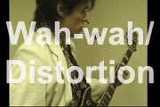
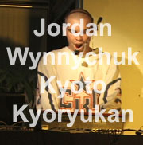

The Mouthesizer
With the Mouthesizer, a mini headmounted ccd camera tracks the shadow area inside the mouth using colour and intensity thresholding. Shape parameters extracted from the segmented region are mapped to MIDI control changes. This allows one to control audio effects, synthesizer parameters, or anything you like with movements of the mouth. The vision algorithm is stable because the mouth opening is not a surface: illumination variations do not have a large effect on the segmented area.
 
Video Clips



Gesture-Sound Mapping Descriptions
In the first two video clips the mouthesizer controls timbre parameters in two sequencer loops implemented on the Nord Mod virtual modular synthesizer (made by Clavia, Sweden). In the first clip, mouth width is mapped to resonance and mouth height to the cut-off frequency of a low-pass filter. The mapping is non-linear, as becomes evident when the tongue is brought into play. In the second clip the aspect ratio of the segmented area is used to control a morph between the vowel formant filters for the vowels [a], [i], [o]. The mapping is chosen to correspond with the actual acoustic shape to sound mapping in speech production. This gives the player an intuitive gesture to effect mapping which makes use of existing human capabilities for sound control. In the third video clip, jazz guitarist Ichiro Umata uses the mouthesizer to control wah-wah and distortion. The height of the mouth opening is mapped to the cutoff frequency of a low pass filter, so that opening and closing the mouth gives a wah-wah effect (voicing "ah" and opening and closing the mouth has a similar acoustic effect). Mouth width is mapped to distortion: stretching the corners of the mouth wide in an emotional grimace produces a gritty, distorted sound. Like a foot pedal, the mouthesizer offers an additional controller to a musician who has both hands busy with a musical instrument. Our studies suggest that the mouth controller is more intuitive and easier to learn than a foot pedal.
Live Performance

Why?
The musculature of the face allows for fine motor control of actions, and the associated cortical circuitry occupies a comparatively large part of the somatosensory area. So it is interesting to explore the possibility of machine interfaces that are driven by facial action. Because facial action is involved in both speech production and emotional expression, there is a rich space of intuitive gesture to sound mappings for face action. These thoughts motivated our current exploration of facial gesture musical interfaces. It would be interesting to develop a facial gesture music interface for quadriplegic djs to allow them to control the expressive part of techno loops, for example. Spinal paralysis usually leaves cranial nerves, and facial control, intact.
More Info: Publications
Facing the Music: A Facial Action Controlled Musical Interface
Michael J. Lyons & Nobuji Tetsutani
Proceedings, CHI 2001, Conference on Human Factors in Computing Systems
March 31 - April 5, Seattle, pp. 309-310. (150K PDF)
The Mouthesizer: A Facial Gesture Musical Interface
Michael J. Lyons, Michael Haehnel & Nobuji Tetsutani
Conference Abstracts, Siggraph 2001, Los Angeles, p. 230. (234K PDF)
Media Coverage
Magazine: NewScientist, AsiaWeek, Computerra (Russian), Trends (Flemish)
Newspaper: Hindustan Times
Radio: Public Radio International's World Technology Report
Web: Ingenioren|net (Danish), Astaga!com (Indonesian), Jornal do Canal (Portugese), Hotwired Webmonkey, Silkhouse.co.uk
The Noh Mask Effect
JAFFE Facial Expression Database
Personalized Avatar Creation using Face Recognition
Web Resources on Facial Expression Research
Home